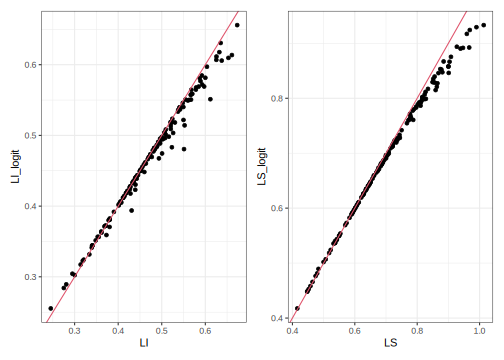

8.7 Tabla final de estimaciones
8.7.1 Función para el calculo de intervalos de confianza
La función ICL() sirve para calcular intervalos de confianza para la proporción de una población, dada una muestra y un nivel de confianza. Los argumentos de la función son:
p: la proporción muestralmse: el error cuadrático medioalpha: el nivel de confianza deseado (por defecto es 0.05)student: un indicador booleano que indica si se debe usar una distribución t de Student en lugar de la distribución normal para el cálculo del intervalo de confianza (por defecto es FALSE)nu: el número de grados de libertad si se usa una distribución t de Student (por defecto es NULL y se calcula automáticamente)
ICL <- function(p, mse, alpha = 0.05, student = FALSE, nu = NULL) {
if (student == TRUE) {
q <- qt(1 - alpha/2, nu)
} else {
q <- qnorm(1 - alpha/2)
}
CL <- log(p/(1 - p)) - (q * sqrt(mse))/(p * (1 - p))
CU <- log(p/(1 - p)) + (q * sqrt(mse))/(p * (1 - p))
IC_1 <- exp(CL)/(1 + exp(CL))
IC_2 <- exp(CU)/(1 + exp(CU))
return(data.frame(L.I = IC_1, L.S = IC_2))
}La función TablaFinal toma como entrada la tabla estimacionesBench y realiza una serie de transformaciones y cálculos para generar una tabla final con las estimaciones y los intervalos de confianza correspondientes.
Primero, agrega dos columnas nuevas: sintetico y sintetico_back. La columna sintetico se obtiene a partir de una matriz generada a partir de la columna base_FH de la tabla estimacionesBench, que contiene los valores de las variables auxiliares utilizadas en el modelo de Fay-Herriot. Esta matriz se multiplica por los coeficientes del modelo ajustado, que se asume que se ha generado previamente. La columna sintetico_back es el resultado de aplicar una transformación inversa al valor de sintetico.
Luego, se seleccionan y renombran las columnas que se incluirán en la tabla final. Estas columnas incluyen la estimación directa (Directo), el error estándar de la estimación directa (ee_directo), el coeficiente de variación de la estimación directa (CV_directo), la estimación de Fay-Herriot (FayHerriot), la raíz del error cuadrático medio de la estimación de Fay-Herriot (rmse_FH), el coeficiente de variación de la estimación de Fay-Herriot (rrmse_FH), la estimación de gamma (Gamma), las estimaciones sintéticas (sintetico y sintetico_back), la estimación de Fay-Herriot con el ajuste de benchmark (FH_RBench), y los límites inferior y superior de los intervalos de confianza calculados utilizando el método de la distribución normal (LI_normal y LS_normal) y el método logit (LI_logit y LS_logit). Finalmente, se calculan los límites inferior y superior de los intervalos de confianza finales (LI_final y LS_final), teniendo en cuenta los límites de 0 y 1.
TablaFinal <- estimacionesBench %>%
mutate(
sintetico = as.matrix(base_FH %>% data.frame() %>%
dplyr::select(rownames(
fh_arcsin$model$coefficients
))) %*%
fh_arcsin$model$coefficients[, 1],
sintetico_back = sin(sintetico) ^ 2
) %>%
transmute(
id_dominio,
n_muestral = n,
Directo = Direct,
ee_directo = sqrt(Direct_MSE),
CV_directo = Direct_CV,
FayHerriot = FH,
rmse_FH = sqrt(FH_MSE),
rrmse_FH = rmse_FH / FayHerriot,
Gamma,
sintetico,
sintetico_back,
FH_RBench,
LI_normal = FH_RBench - 1.96 * sqrt(FH_MSE),
LS_normal = FH_RBench + 1.96 * sqrt(FH_MSE),
LI_logit = ICL(FH_RBench, FH_MSE)[, 1],
LS_logit = ICL(FH_RBench, FH_MSE)[, 2],
LI_final = ifelse(LI_normal < 0, LI_logit, LI_normal),
LS_final = ifelse(LS_normal > 1, LS_logit, LS_normal)
)
tba(head(TablaFinal,20))| id_dominio | n_muestral | Directo | ee_directo | CV_directo | FayHerriot | rmse_FH | rrmse_FH | Gamma | sintetico | sintetico_back | FH_RBench | LI_normal | LS_normal | LI_logit | LS_logit | LI_final | LS_final |
|---|---|---|---|---|---|---|---|---|---|---|---|---|---|---|---|---|---|
| 0101 | 2951 | 0.4147 | 0.0221 | 0.0534 | 0.4142 | 0.0205 | 0.0496 | 0.1207 | 0.6990762 | 0.4141062 | 0.4118 | 0.3716 | 0.4521 | 0.3722 | 0.4526 | 0.3716 | 0.4521 |
| 0201 | 221 | 0.4526 | 0.0730 | 0.1613 | 0.5390 | 0.0413 | 0.0766 | 0.0128 | 0.8255541 | 0.5401128 | 0.5304 | 0.4494 | 0.6113 | 0.4493 | 0.6098 | 0.4494 | 0.6113 |
| 0202 | 86 | NA | NA | NA | 0.6466 | 0.0714 | 0.1104 | NA | 0.9341945 | 0.6466097 | 0.6362 | 0.4964 | 0.7761 | 0.4887 | 0.7620 | 0.4964 | 0.7761 |
| 0203 | 86 | 0.7138 | 0.1004 | 0.1406 | 0.7917 | 0.0540 | 0.0682 | 0.0056 | 1.0973752 | 0.7921244 | 0.7790 | 0.6732 | 0.8847 | 0.6560 | 0.8669 | 0.6732 | 0.8847 |
| 0204 | 51 | NA | NA | NA | 0.7472 | 0.0726 | 0.0972 | NA | 1.0439193 | 0.7471556 | 0.7352 | 0.5928 | 0.8775 | 0.5720 | 0.8522 | 0.5928 | 0.8775 |
| 0205 | 34 | NA | NA | NA | 0.7119 | 0.1019 | 0.1431 | NA | 1.0041934 | 0.7118791 | 0.7005 | 0.5008 | 0.9002 | 0.4745 | 0.8583 | 0.5008 | 0.9002 |
| 0206 | 65 | 0.5527 | 0.1154 | 0.2088 | 0.5870 | 0.0638 | 0.1087 | 0.0052 | 0.8730630 | 0.5872164 | 0.5776 | 0.4526 | 0.7027 | 0.4503 | 0.6954 | 0.4526 | 0.7027 |
| 0208 | 74 | 0.8122 | 0.0983 | 0.1210 | 0.6703 | 0.0775 | 0.1156 | 0.0044 | 0.9584522 | 0.6696196 | 0.6595 | 0.5077 | 0.8114 | 0.4962 | 0.7921 | 0.5077 | 0.8114 |
| 0210 | 16 | NA | NA | NA | 0.7081 | 0.1037 | 0.1465 | NA | 1.0000249 | 0.7080961 | 0.6967 | 0.4935 | 0.9000 | 0.4675 | 0.8574 | 0.4935 | 0.9000 |
| 0301 | 264 | 0.5668 | 0.0624 | 0.1100 | 0.5305 | 0.0362 | 0.0683 | 0.0170 | 0.8152491 | 0.5298332 | 0.5220 | 0.4509 | 0.5930 | 0.4510 | 0.5921 | 0.4509 | 0.5930 |
| 0302 | 123 | 0.7561 | 0.0769 | 0.1017 | 0.6841 | 0.0630 | 0.0921 | 0.0085 | 0.9733220 | 0.6835305 | 0.6732 | 0.5496 | 0.7967 | 0.5402 | 0.7832 | 0.5496 | 0.7967 |
| 0303 | 206 | 0.6078 | 0.0684 | 0.1125 | 0.6168 | 0.0353 | 0.0572 | 0.0139 | 0.9033845 | 0.6168944 | 0.6069 | 0.5377 | 0.6761 | 0.5360 | 0.6735 | 0.5377 | 0.6761 |
| 0304 | 176 | 0.6450 | 0.0716 | 0.1110 | 0.7021 | 0.0503 | 0.0717 | 0.0121 | 0.9942169 | 0.7028011 | 0.6908 | 0.5922 | 0.7895 | 0.5847 | 0.7800 | 0.5922 | 0.7895 |
| 0305 | 51 | NA | NA | NA | 0.6842 | 0.0729 | 0.1066 | NA | 0.9740382 | 0.6841966 | 0.6732 | 0.5303 | 0.8162 | 0.5183 | 0.7978 | 0.5303 | 0.8162 |
| 0401 | 481 | 0.5419 | 0.0455 | 0.0840 | 0.5609 | 0.0352 | 0.0627 | 0.0319 | 0.8471080 | 0.5615533 | 0.5519 | 0.4830 | 0.6209 | 0.4825 | 0.6194 | 0.4830 | 0.6209 |
| 0402 | 75 | NA | NA | NA | 0.7460 | 0.0684 | 0.0916 | NA | 1.0426203 | 0.7460256 | 0.7341 | 0.6001 | 0.8680 | 0.5815 | 0.8458 | 0.6001 | 0.8680 |
| 0403 | 108 | 0.6788 | 0.0913 | 0.1345 | 0.6959 | 0.0598 | 0.0859 | 0.0072 | 0.9868279 | 0.6960252 | 0.6847 | 0.5676 | 0.8019 | 0.5580 | 0.7889 | 0.5676 | 0.8019 |
| 0404 | 68 | NA | NA | NA | 0.5999 | 0.0754 | 0.1257 | NA | 0.8859597 | 0.5998849 | 0.5903 | 0.4425 | 0.7381 | 0.4388 | 0.7263 | 0.4425 | 0.7381 |
| 0405 | 221 | 0.5383 | 0.0704 | 0.1309 | 0.5777 | 0.0513 | 0.0889 | 0.0136 | 0.8639324 | 0.5782117 | 0.5684 | 0.4678 | 0.6690 | 0.4664 | 0.6649 | 0.4678 | 0.6690 |
| 0407 | 67 | 0.7513 | 0.1113 | 0.1482 | 0.6447 | 0.0677 | 0.1050 | 0.0042 | 0.9317482 | 0.6442693 | 0.6344 | 0.5017 | 0.7671 | 0.4948 | 0.7546 | 0.5017 | 0.7671 |
Comparando los limites superior e inferior de los IC
a1 <- ggplot(TablaFinal, aes(x = LI_normal, y = LI_logit)) +
geom_point() +
geom_abline(aes(intercept = 0, slope = 1), col = 2) +
labs(y = "LI_logit", x = "LI")
a2 <- ggplot(TablaFinal, aes(x = LS_normal, y = LS_logit)) +
geom_point() +
geom_abline(aes(intercept = 0, slope = 1), col = 2) +
labs(y = "LS_logit", x = "LS")
a1 | a2
Guardar resultados
saveRDS(TablaFinal, '../Data/TablaFinal.Rds')
saveRDS(estimacionesBench, '../Data/estimacionesBench.Rds')